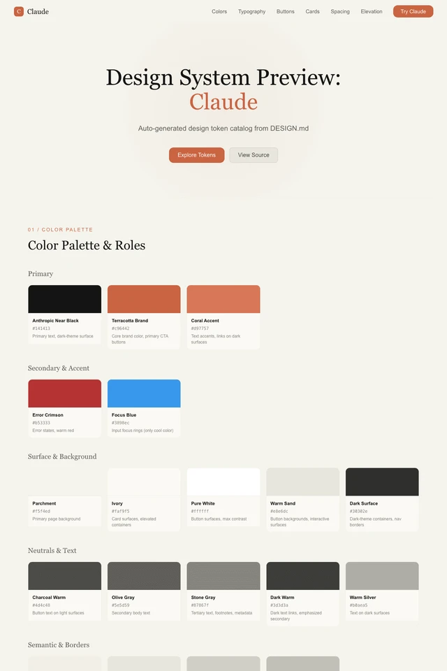스크린샷 확대 ↗ 01 / 읽기·지식 claude따뜻한 에디토리얼상담 기록, 리서치 보고서, 긴 답변을 읽는 서비스크림색 바탕, 세리프 제목, 따뜻한 회색, 넉넉한 본문 행간적용할 때 주의할 점거대 히어로와 반복되는 장식 일러스트는 업무 화면에서 제외한국어 폰트·대비·상태 표현은 APPLY.md와 공통 규칙에 맞춰 조정하세요. 한국어 안내DESIGN.md ↓전체 예시 ↗프롬프트출처 ↗적용 프롬프트 복사
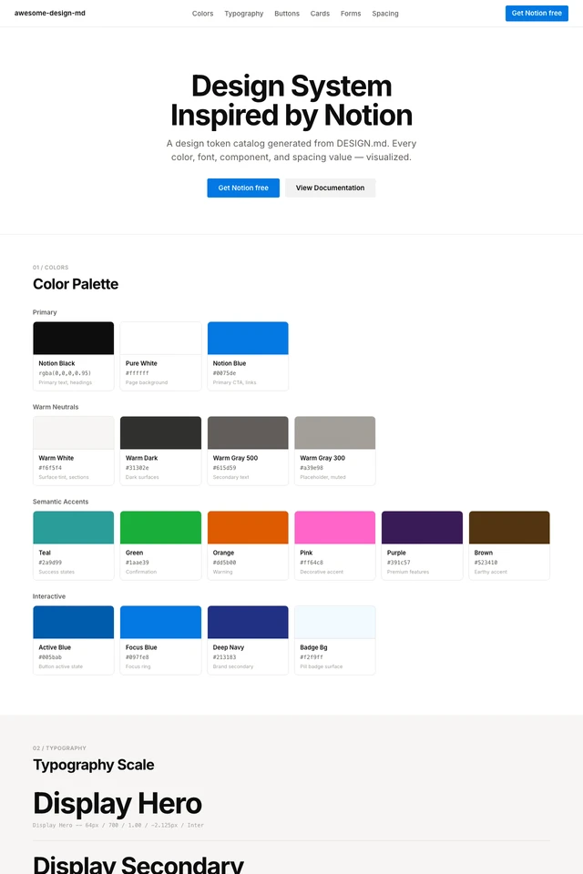스크린샷 확대 ↗ 02 / 읽기·지식 notion담백한 워크스페이스문서, 내부 위키, 프로젝트 기록, 편집 도구따뜻한 중립색, 얇은 구분선, 텍스트 중심 위계적용할 때 주의할 점모든 정보를 카드에 담지 말고 문서·목록·표를 우선한국어 폰트·대비·상태 표현은 APPLY.md와 공통 규칙에 맞춰 조정하세요. 한국어 안내DESIGN.md ↓전체 예시 ↗프롬프트출처 ↗적용 프롬프트 복사
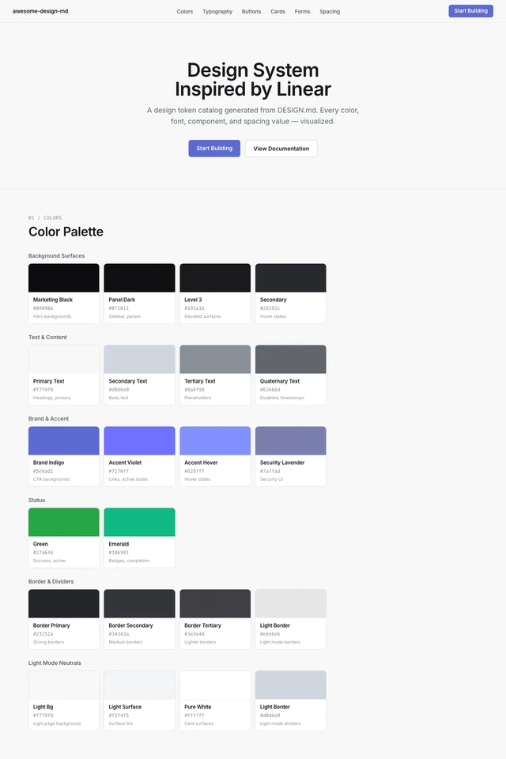스크린샷 확대 ↗ 03 / 업무·데이터 linear.app정밀한 다크 콘솔이슈 관리, 개발 도구, 작업 큐, 운영 콘솔어두운 면의 명도 차이, 절제된 강조색, 밀도 높은 목록적용할 때 주의할 점보라색 빛 번짐과 작은 저대비 본문을 제거한국어 폰트·대비·상태 표현은 APPLY.md와 공통 규칙에 맞춰 조정하세요. 한국어 안내DESIGN.md ↓전체 예시 ↗프롬프트출처 ↗적용 프롬프트 복사
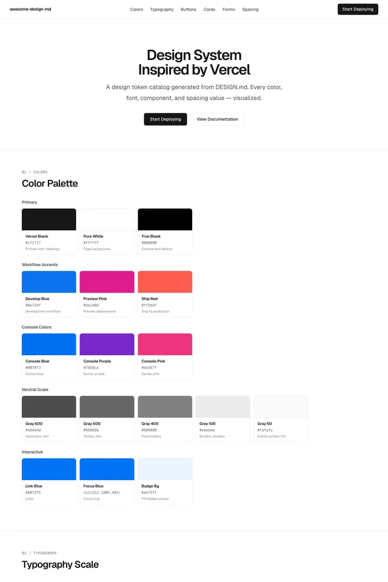스크린샷 확대 ↗ 04 / 업무·데이터 vercel흑백 테크니컬API 도구, 배포 관리, 로그, 실험 결과흑백 위계, 얇은 경계, 코드와 데이터 정렬적용할 때 주의할 점모든 화면에 거대한 중앙 제목이나 격자 장식 배경을 넣지 않기한국어 폰트·대비·상태 표현은 APPLY.md와 공통 규칙에 맞춰 조정하세요. 한국어 안내DESIGN.md ↓전체 예시 ↗프롬프트출처 ↗적용 프롬프트 복사
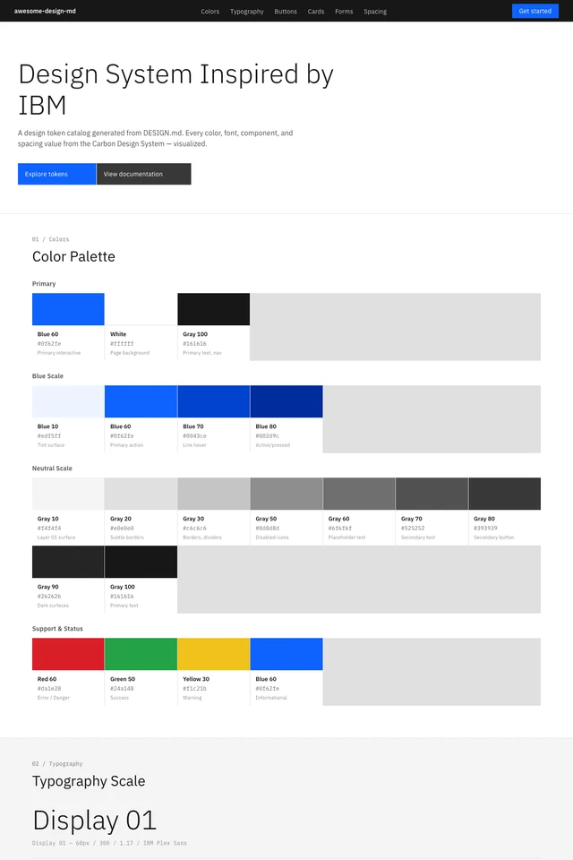스크린샷 확대 ↗ 05 / 업무·데이터 ibm엔터프라이즈 그리드기업 운영, 관리 시스템, 정책·승인 화면그리드와 정렬, 명확한 파란 액션, 사각형 구조적용할 때 주의할 점마케팅용 큰 타이포를 표와 폼에 그대로 적용하지 않기한국어 폰트·대비·상태 표현은 APPLY.md와 공통 규칙에 맞춰 조정하세요. 한국어 안내DESIGN.md ↓전체 예시 ↗프롬프트출처 ↗적용 프롬프트 복사
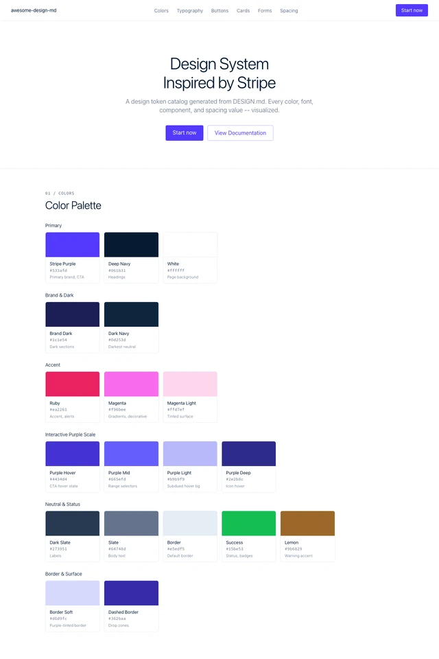스크린샷 확대 ↗ 06 / 업무·데이터 stripe정돈된 금융 서비스결제, 정산, 사용량, 숫자 중심 대시보드짙은 남색 텍스트, 수치 위계, 정돈된 폼적용할 때 주의할 점브랜드 그라디언트는 선택 요소. 업무 화면에서는 단색 면을 기본으로한국어 폰트·대비·상태 표현은 APPLY.md와 공통 규칙에 맞춰 조정하세요. 한국어 안내DESIGN.md ↓전체 예시 ↗프롬프트출처 ↗적용 프롬프트 복사
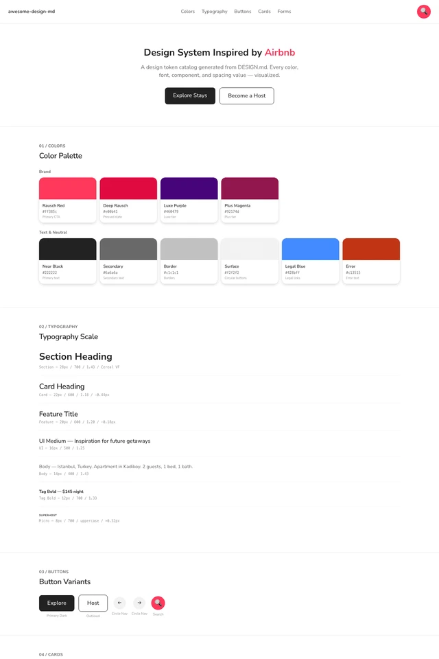스크린샷 확대 ↗ 07 / 소비자·탐색 airbnb친근한 탐색과 예약예약, 공간 탐색, 상품 상세, 지역 서비스친근한 둥근 요소, 사진과 검색 중심, 명확한 선택 상태적용할 때 주의할 점사진 없는 빈 카드 격자를 반복하지 않기한국어 폰트·대비·상태 표현은 APPLY.md와 공통 규칙에 맞춰 조정하세요. 한국어 안내DESIGN.md ↓전체 예시 ↗프롬프트출처 ↗적용 프롬프트 복사
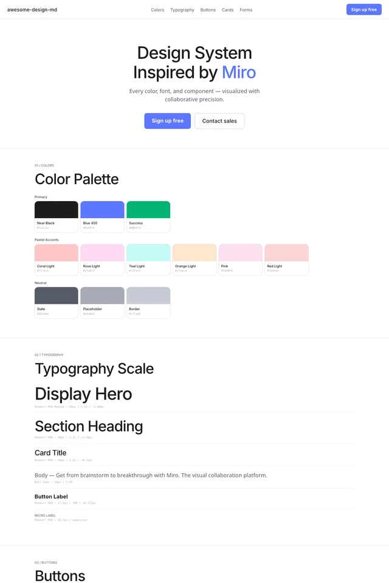스크린샷 확대 ↗ 08 / 소비자·탐색 miro밝은 협업 캔버스워크숍, 교육, 팀 협업, 아이디어 분류파스텔 면의 역할 구분, 가벼운 구조, 넓은 작업 공간적용할 때 주의할 점한 구역에 여러 색을 무작위 배치하지 말고 색마다 의미 지정한국어 폰트·대비·상태 표현은 APPLY.md와 공통 규칙에 맞춰 조정하세요. 한국어 안내DESIGN.md ↓전체 예시 ↗프롬프트출처 ↗적용 프롬프트 복사
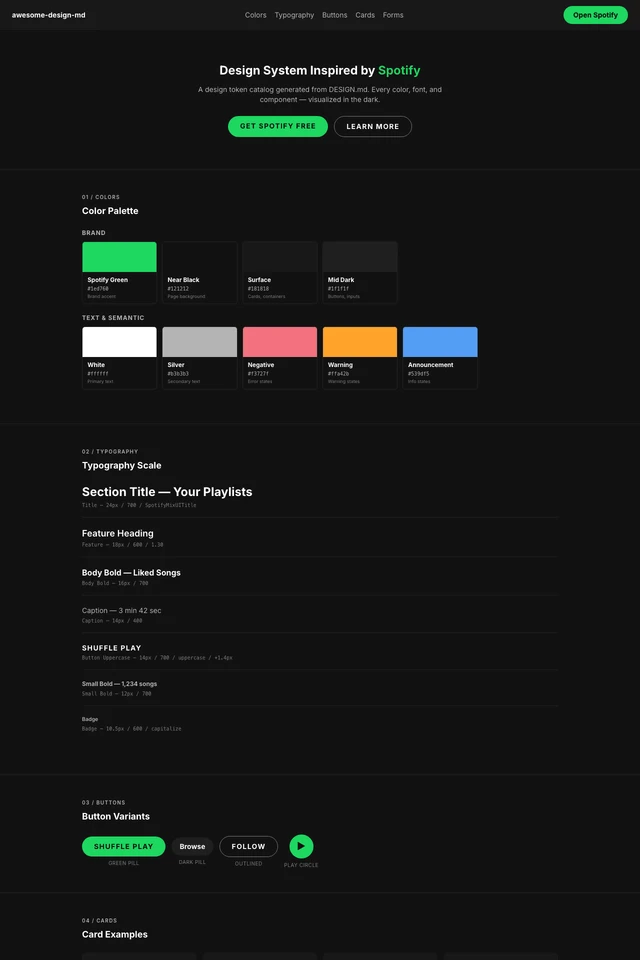스크린샷 확대 ↗ 09 / 콘텐츠·브랜드 spotify몰입형 미디어음성, 음악, 영상, 콘텐츠 라이브러리어두운 중립 배경, 콘텐츠 이미지, 크고 분명한 재생 조작적용할 때 주의할 점녹색을 장식 면에 남발하지 않기. 커버 이미지를 가짜로 채우지 않기한국어 폰트·대비·상태 표현은 APPLY.md와 공통 규칙에 맞춰 조정하세요. 한국어 안내DESIGN.md ↓전체 예시 ↗프롬프트출처 ↗적용 프롬프트 복사
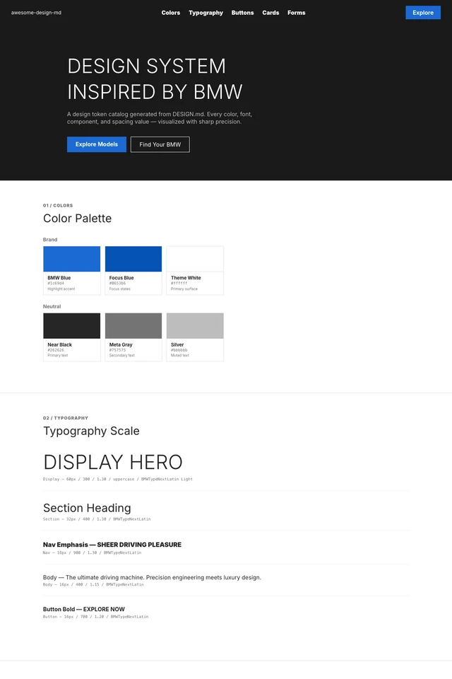스크린샷 확대 ↗ 10 / 콘텐츠·브랜드 bmw각진 프리미엄하드웨어 소개, 산업 제품, 포트폴리오각진 모서리, 넓은 이미지, 가는 큰 제목, 명암 대비적용할 때 주의할 점사진이 없으면 시네마틱 히어로를 억지로 만들지 않기한국어 폰트·대비·상태 표현은 APPLY.md와 공통 규칙에 맞춰 조정하세요. 한국어 안내DESIGN.md ↓전체 예시 ↗프롬프트출처 ↗적용 프롬프트 복사
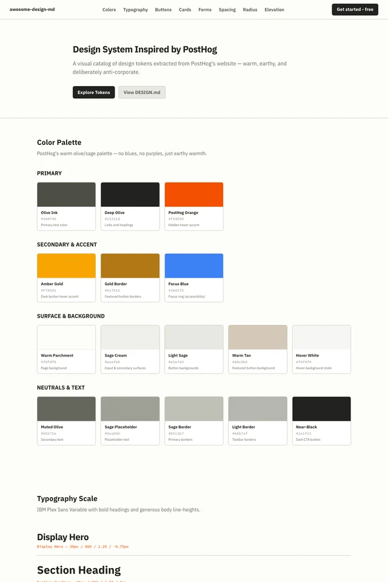스크린샷 확대 ↗ 11 / 콘텐츠·브랜드 posthog개성 있는 개발자 편집물개발자 커뮤니티, 분석 도구, 실험 노트올리브·세이지 중립색, 작은 라운드, 두꺼운 제목, 편집물 같은 구성적용할 때 주의할 점고슴도치 등 원 브랜드 캐릭터를 복제하지 않기한국어 폰트·대비·상태 표현은 APPLY.md와 공통 규칙에 맞춰 조정하세요. 한국어 안내DESIGN.md ↓전체 예시 ↗프롬프트출처 ↗적용 프롬프트 복사
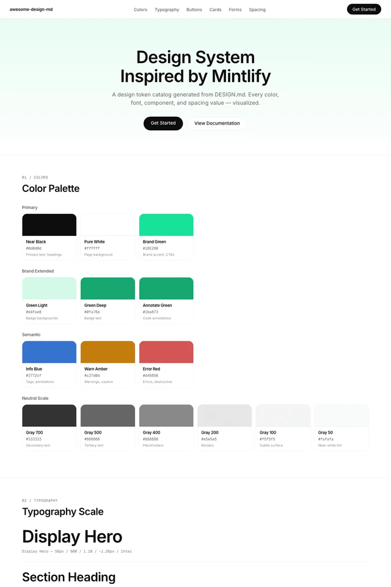스크린샷 확대 ↗ 12 / 읽기·지식 mintlify선명한 문서 포털개발 문서, 온보딩, 도움말, API 안내읽기 좋은 본문, 코드용 별도 글꼴, 절제된 초록 포인트적용할 때 주의할 점흐린 초록 그라디언트와 저대비 테두리는 필수 규칙이 아님한국어 폰트·대비·상태 표현은 APPLY.md와 공통 규칙에 맞춰 조정하세요. 한국어 안내DESIGN.md ↓전체 예시 ↗프롬프트출처 ↗적용 프롬프트 복사